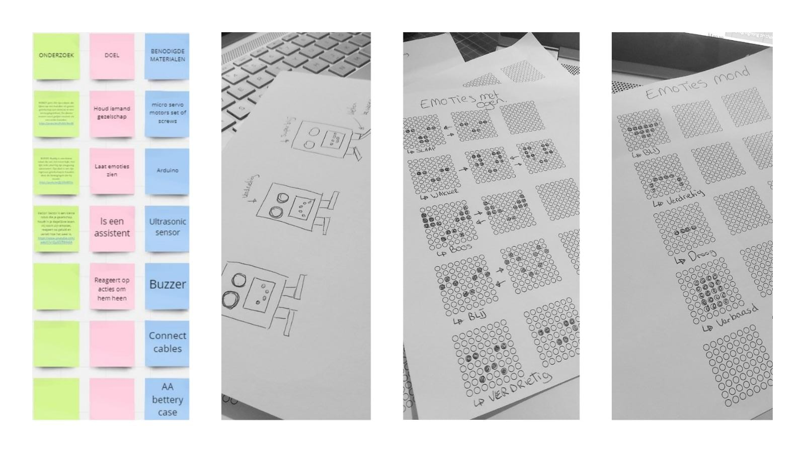

WEEK 1
Dag 1
De eerste dag van de lab weken hebben we een start gemaakt met een kick-off waarin ons gevraagd was een concept voor een artificial creature. Daarom hebben wij besloten een brainstorm via miro uit te voeren om al onze ideeën in kaart te brengen en gezamenlijk tot een concept te komen. Vanuit het brainstormen wilden wij eigenlijk een product creëren dat de eenzaamheid van de corona tijd zou verhelpen voor mensen. Dankzij corona hebben we afstand van elkaar genomen en zijn we meer thuis gebleven. Sommigen van ons waren alleen en konden geen contact met anderen krijgen. De meeste mensen voelden zich hierdoor alleen.
Met het idee dat een kleine stap en meer genegenheid naar elkaar wonderen kan doen, hebben we besloten om een robot te maken die emoties laat zien hoe dichter bij iemand komt. Een buddy waarbij je geen risico neemt als je de 1,5 meter overschrijdt.
Voor elke emotie maken zijn benen kleine bewegingen en zie je een afbeelding weergeven op de lampjes die de emoties van de robot vertonen.De emoties komen met afstand naar boven. Hoe dichter je bij de robot bent, hoe gelukkiger hij wordt.
Bijvoorbeeld:
- • SLAAP: op een afstand van 1 meter slaapt de robot [ Kruisje ]
- • WAKKER WORDEN: als je 90 cm van hem af bent gaan zijn ogen open [ * _ * ]
- • BOOS: op 50 cm afstand wordt hij boos als je niet dichtbij hem komt [ > _ < ]
- • HAPPY: op 20 cm afstand ziet hij er vrolijk uit en blijft springen van vreugde [Hartje ]
Het algemene doel van de robot is dat de emoties en de reactie die hij toont iemand even kunnen afleiden van wat zich allemaal speelt en zich wat minder alleen voelt.
Om een start te maken met het uitwerken van het concept zijn er schetsen gemaakt van de artificial creature en hoe de creature eruit komt te zien. Dit is gedaan zodat wij makkelijker in kaart konden brengen welke materialen wij hiervoor nodig hadden. De benodigdheden zijn toen dus besproken en opgeschreven. Er is ook geschetst hoe de lampjes die voor de creature gebruikt worden om emoties te laten zien, eruit moeten zien. 
Dag 2
De tweede dag van de labweken zijn wij begonnen met experimenteren op de sensor en hebben wij gecodeerd. Wij hebben gecodeerd met de LED matrix en ultrasonische sensor. Vervolgens zijn we begonnen met het uitwerken van de schetsen die wij hadden gemaakt. We hadden in eerste instantie 2 concepten: Frank en Kees. Het onderscheid zat hem eigenlijk alleen in de opmaak van de AC. We hebben vanuit deze 2 concepten gekozen voor de robot Frank.
Na het uitwerken van frank hebben we hem iets kleiner gemaakt en uiterlijke kenmerken gegeven als wimpers en een glimlach. Hierdoor leek het meer op een vrouwelijke robot dus kozen we voor de naam Katja.
We hadden eerst het idee om van de LED matrix een mond te maken voor de robot die de emotie weergeeft, maar door het experimenteren hebben wij er toch voor gekozen om het als hart te gebruiken. De matrix wordt nu dus in het midden van de AC getoond als hart en dit weergeeft ook de emoties. Als iemand ver van haar staat vertoont ze een X (kruisje) en dichter bij dan een meter een hart. Dit is voor dag 2 ook hoe ver we zijn gekomen. We zij gebleven bij de benen en hiermee gaan wij dag 3 weer aan de slag.
.jpeg)
Dag 3
De derde dag hebben we gezamenlijk gekeken naar hoe we de voeten en benen van de robot konden laten bewegen. We hebben dus veel online onderzoek gedaan naar DIY’s. We kwamen een DIY tegen voor de robot Otto. Met de kennis die wij hebben opgedaan vanuit het onderzoek gingen wij experimenteren om te kijken of wij de voeten en benen dus ook aan de praat konden krijgen. We wilde ongeveer dezelfde soort benen maken omdat de benen/voeten van Otto aansluiten op onze schetsen en de bewegingen die Otto maakt zijn veel mooier.
Vervolgens zijn we begonnen aan het maken van de opmaak op schaal in InDesign en we hebben gekeken of alles goed zou passen. Voor het programmeren van de voet hebben we momenteel alleen 1 voet aan de praat gekregen, voor het programmeren van de andere voet hadden we 2 extra servomotoren nodig.
.jpeg)
Dag 4
De vierde dag van de lab hebben we de op schaal getekende tekening gesneden met een cutter voor het karton. Na het uitsnijden van het op maat gemaakte karton is er een begin gemaakt met het in elkaar zetten van Katja.
We hebben bij het in elkaar zetten van Katja gecontroleerd of de code die we bij het programmeren van de AC hadden gemaakt zou werken en wat er fout zou gaan. Alles werkte goed. We kwamen tijdens het onderzoek tot het idee dat het misschien leuk was om het hart van katja te veranderen naar een leeg hart als men verder dan 50cm staat. Eerst zag je een kruisje als je ver weg stond en een hartje als je dichtbij kwam. Nu zie je een leeg hart als je ver weg staat en het hart wordt steeds voller naarmate je richting Katja toe loopt.
We gaan morgen verder met het afronden van de benen en het kijken naar bekleding voor Katja en de opmaak van haar uiterlijk.
Dag 5
De vijfde dag hebben wij verder gewerkt aan het maken van een hartslag met de arduino buzzer. De hartslag wordt getriggerd wanneer het hart vol is. Wanneer men dus ver staat hoor je niks en naarmate je dichterbij komt loopt het hart vol. Als het hart uiteindelijk vol is hoor je Katja haar hartslag. We willen ervoor zorgen dat de AC Katja werkt op een batterij en we hebben onderzoek gedaan naar hoe wij dit gaan doen. De materialen hebben we gevonden en we gaan kijken waar we ze kunnen halen.
We hebben verder gekeken naar hoe we de benen verder moeten veranderen van Katja. De stappen die zij zet verlopen namelijk nog niet helemaal soepel. Ook is er gekeken naar hoe wij Katja willen gaan aankleden en wat wij daarvoor nodig hebben.
WEEK 2
Dag 6
De zesde dag van de labweken zijn we begonnen met onderzoeken. We moesten uitzoeken hoe we ervoor konden zorgen dat de verschillende arduino codes allemaal tegelijk konden werken. Nadat wij hebben onderzocht hoe dat kan hebben wij dit zelf geprobeerd uit te voeren door alle kabels samen te verbinden aan 1 vaste lijn. Het is in een nieuwe arduino setup gezet. Zodra alles klopt zetten we het in het originele bestand.
Hierna hebben we gekeken naar hoe we de bewegingen van Katja konden aanpassen om haar bewegingen op een dansje te laten lijken. We hebben de benen een beetje aangepast omdat die niet op de juiste positie stonden en graden. Nu doet Katja een dansje wanneer haar hartje vol gelopen is.
.jpeg)
Dag 7
De zevende dag hebben we gezeten aan het uiterlijk van Katja. We wilde haar een verven en armpjes geven.
We hebben de vorm van de armpjes weer gemaakt met de cutter en bekleed met ducttape. Hiervoor kozen wij omdat we haar de uitstraling van een echte robot wilde geven.
Naar aanleiding hiervan hebben we Katja ook geheel metallic zilver gespoten.
.jpeg)
.jpeg)
Dag 8
Vandaag hebben wij de materialen binnen gekregen die ervoor zouden zorgen dat wij Katja konden laten werken op een batterij. Hiervoor hebben we een 9v batterij gebruikt, een batterij aansluitclip en een dc connector.
Verder hebben we gezeten aan de haren van Katja. We kozen voor rood haar omdat wij dit vonden passen bij haar. Ze straalt met een rode kleur meer liefde uit. We hebben verder gewerkt voor eventjes aan het maken van de buzzer.
We hebben ook gekeken naar of we Katja konden bekleden en hoe wij dat wilde doen. We bedachten dat ze een sjaaltje kon krijgen. Ook is de code voor bewegingen loop van Katja verbeterd.
.jpeg)
Dag 9
We hadden een plek gereserveerd in de innovation playground. Hier hebben we gewerkt aan de puntjes op de i te zetten.
.jpeg)
.jpeg)
We gingen van start met het installeren van de buzzer. Sommige code liep soms vast dus we wilden sommige draden opnieuw installeren omdat de code achterliep. We kwamen er door Chris achter dat het lag aan de batterij en niet de code. Onze AC gebruikte erg veel stroom door de servomotoren.
Na het afmaken van Katja hebben we hebben een presentatie in elkaar gezet voor de expo. We hebben daarvoor ook foto's en video's gemaakt met de reactie van andere studenten die Katja gingen testen. De video is gemaakt met Adobe Rush.
Dag 10
Dag 10 bestond uit de expo en de eindpresentatie. Hierop hebben wij weergeven wat het proces was van het maken van Katja en wat het eindproduct was. Wij kregen hier positieve reacties op en mensen vonden het er leuk uitzien. We zijn niet door gegaan naar de finale maar Hosei en ik waren erg tevreden met de uitkomst en de reacties.
De samenwerking is goed verlopen. We vulde elkaar erg goed aan en hielpen elkaar waar de ander tekort schoot.